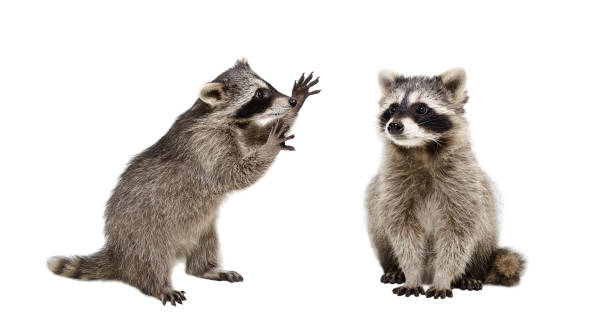
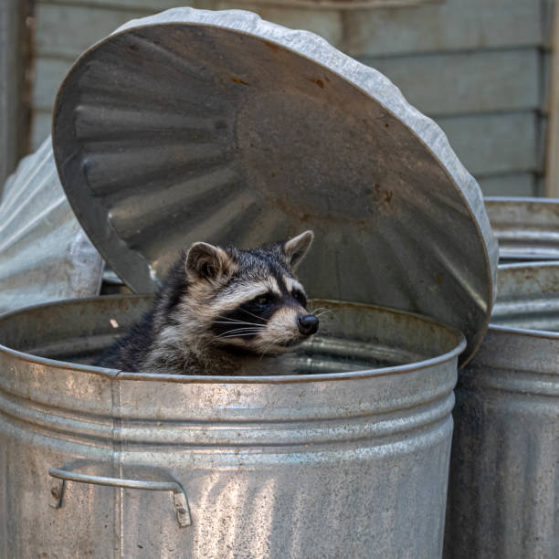
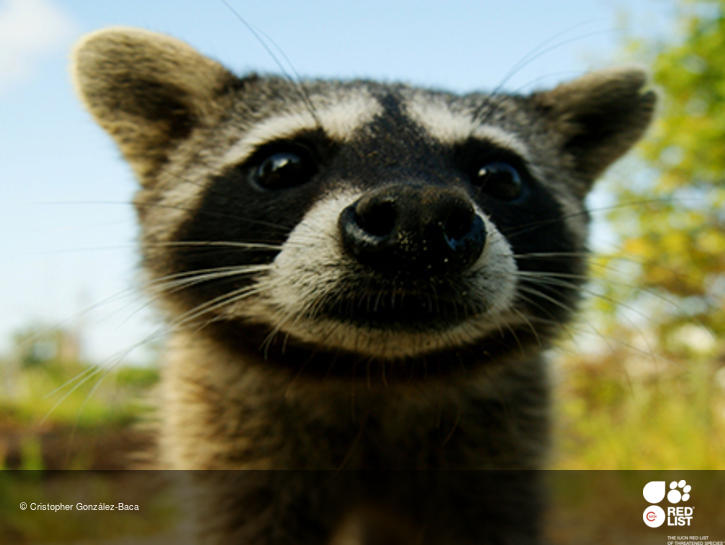
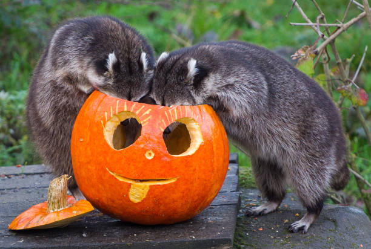
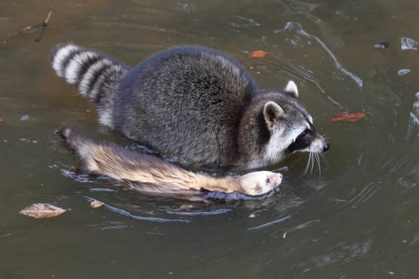

El mapache es un mamífero omnívoro nativo de América del Norte. Se
reconoce fácilmente por su máscara facial negra y su cola anillada.

Dos mapaches curiosos.
Características
Los mapaches tienen un cuerpo robusto y patas cortas. Son muy hábiles
con sus patas delanteras, las cuales utilizan para manipular objetos y
alimentos.
Tamaño: 40-70 cm de largo y 20-30 cm de altura. Peso: 4-14 kg.
Pelaje: Gris oscuro a marrón con una máscara negra alrededor de los
ojos y una cola con anillos.
Hábitos: Nocturnos.
Alimentación: Omnívoros.
Comportamiento: Inteligentes y con gran capacidad para resolver
problemas.

Mapache saliendo de un cubo de basura.
Tipos de Mapaches
Existen varias especies de mapaches, aunque la más conocida es el
mapache común:
Mapache Común (Procyon lotor)
Mapache de Clymene (Procyon cancrivorus)
Mapache de Isla de Cozumel (Procyon pygmaeus)
Mapache de Oso (Procyon lotor hirsutus)

Mapache de Cozumel.En peligro de extinción.
Curiosidades
Hábitos Nocturnos.
Habilidad de Manipulación con sus patas.
Fuerte Sentido del Olfato.
Memoria y Inteligencia destacada.
Costumbre de “lavar” su comida.
Leyendas y Personajes Famosos
Rascal: Personaje en el libro Rascal de Sterling
North.
Rocky Raccoon: Personaje en la canción de los
Beatles.
Leyenda de los Mapaches en la Cultura Nativa Americana:
Símbolo de astucia y habilidad.
Rocket, un personaje popular de ficción de la cultura popular.
Galería
Mapache en su hábitat natural.

Mapaches disfrutando de una calabaza.

Mapache y hurón nadando.
Mapa de Distribución
El mapache es nativo de América del Norte, desde el sur de Canadá hasta
el norte de Costa Rica. Tambien se encuentran ejemplares en el centro de Europa y Japón.